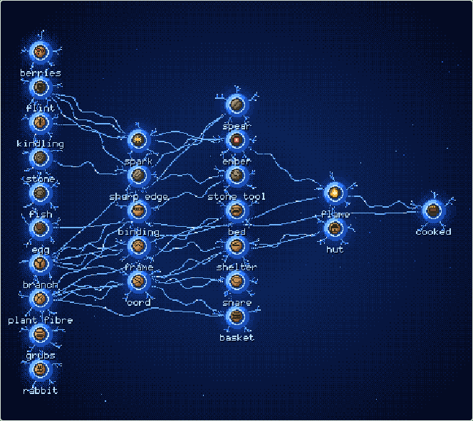

The mind
A discovery is the player's deduction, not the player's chores. The people carry what they have met as neurons, and in the middle of the mind sits one empty idea that beats. The player picks neurons into it one click at a time: a neuron that belongs to something still to be found floats in and connects, anything else withers and tires the mind. When the idea is whole, the most curious person goes and does it, and a fresh empty idea takes its place.
Source: src/modules/mind/neurons.ts, src/modules/mind/mind.ts, src/modules/people/people.ts, src/ui/MindPanel.tsx, src/ui/mindArt.ts, src/pixel/ui/neurons.ts
1Neurons are earned by living
A neuron is something the group has met. Seeing a flint lying within 7 tiles (NOTICE_TILES) or holding it lights flint, and nothing is in the mind that the world did not put there. There are things (flint, stone, dry fibre, branch, each tied to an ItemType) and happenings (spark, ember, flame and the rest, results that nobody can pick up). Knowledge belongs to the group (Mind.known, one byte per neuron): the first person to meet or work something out gets a ! over their head, and from then on everyone has it. The player sees one brain and never has to ask who knows what.
| neuron | kind | how it is earned |
|---|---|---|
| flint | thing | seen lying within 7 tiles, or held |
| stone | thing | seen lying within 7 tiles, or held |
| dry fibre | thing | dry plant fibre, seen lying within 7 tiles, or held |
| branch | thing | seen lying within 7 tiles, or held |
| spark | happening | flint + flint |
| ember | happening | spark + kindling |
| flame | happening | ember + branch, or a burning branch seen |
| sharp edge | happening | flint + stone |
| plant fibre | thing | seen lying within 7 tiles, or held |
| binding | happening | branch + plant fibre |
| stone tool | happening | sharp edge + binding, or a hand axe seen |
| berries | thing | seen lying within 7 tiles, or held |
| grubs | thing | seen lying within 7 tiles, or held |
| egg | thing | seen lying within 7 tiles, or held |
| cord | happening | plant fibre + plant fibre |
| basket | happening | cord + plant fibre |
| cooked | thing | flame + egg |
| fish | thing | seen lying within 7 tiles, or held |
| rabbit | thing | seen lying within 7 tiles, or held |
| spear | happening | sharp edge + branch |
| snare | happening | cord + branch |
| frame | happening | branch + branch |
| bed | happening | frame + plant fibre |
| shelter | happening | frame + cord |
| hut | happening | shelter + plant fibre |
2Areas of the mind
The mind opens on a brain in profile (BrainView, src/ui/mindBrain.ts), cut into areas (REGIONS, content/research/regions.ts: survival, community, making, wonder, memory). An area is deliberately general, it says where to think and not what will be found, so it hints at no recipe. Every neuron belongs to one (ResearchDef.region, default survival, set with inRegion in a research file, Neuron.region). An area is dark until it is open: survival always is, any other once one of its neurons is known. Hovering names the area and counts what is known and what waits to be worked out, an open area with a recipe ripe in it pulses, and clicking an open one zooms into it: the brain scales up about that area and fades while the orbit fades in from small (.se-mind-layer). The orbit then holds only that area's neurons, plus the known parents of its ripe recipes so a combination may reach across areas; the brain button zooms back out and lets go of an unfinished idea. Search will be a field over the brain that lights the area and the neuron.
3One idea in the middle
There are no dark cells and no grown brain. The mind is one idea (Mind.idea, saved: the neurons attached to it and the ones withered on it), drawn as a beating cell in the middle of the panel with a socket for each neuron in it and one open socket for the next. Every known neuron orbits it on rings of about 44-pixel spacing (the first at 112 pixels, each next 46 further out, turning slowly the other way to the one inside), in alphabetical order of the label so that where a neuron sits says nothing about what it belongs to.
What can be found is Mind.ripe: every recipe whose result nobody knows, whose parents are all known and which nobody is already trying. A recipe with a parent nobody has met cannot be found yet, so a pick can never lock the idea onto something the player has no way to finish.
| parents | result | used up | made | carried out as |
|---|---|---|---|---|
| flint + flint | spark | nothing | nothing | a step of a longer chain |
| spark + kindling | ember | dry plant fibre | nothing | a step of a longer chain |
| ember + branch | flame | dry plant fibre, branch | burning branch | order Kindle Campfire |
| flint + stone | sharp edge | nothing | nothing | a step of a longer chain |
| branch + fibre | binding | branch, plant fibre | nothing | a step of a longer chain |
| sharp + binding | stone tool | branch, plant fibre, flint | hand axe | order Knap Hand Axe |
| fibre + fibre | cord | plant fibre | cord | order Twist Cord |
| cord + fibre | basket | plant fibre | basket | order Weave Basket |
| flame + egg | cooked | dry plant fibre, branch, egg | burning branch, roast | a step of a longer chain |
| sharp + branch | spear | nothing | nothing | a step of a longer chain |
| cord + branch | snare | plant fibre | cord | a step of a longer chain |
| branch + branch | frame | nothing | nothing | a step of a longer chain |
| frame + fibre | bed | nothing | nothing | a step of a longer chain |
| frame + cord | shelter | plant fibre | cord | a step of a longer chain |
| shelter + fibre | hut | plant fibre | cord | a step of a longer chain |
The first success of flame is the fire milestone and sets hasDiscoveredFire, the first stone tool sets hasDiscoveredFlintKnapping, so the world opens through what the people worked out and not through a button. Proven, a chain becomes an order: Kindle Campfire plans a campfire (Blueprint.Kindle) and Knap Hand Axe is worked at a knapping floor, which only appears among the buildings once the stone tool is proven.
4Picking
A click on an orbiting neuron is a pick (command pick, Mind.pick). It fits when the neurons already in the idea plus this one are still part of some ripe recipe (a parent may count twice, so flint then flint is spark): a copy of the neuron floats in from its place on the orbit to a seat beside the idea and a fibre grows from it into the next socket, while the original stays where it is, so the same neuron can be picked twice (flint and flint, plant fibre and plant fibre). Anything else withers: the fibre grows, dies and falls away, the copy drifts back and fades into its original, which is dimmed and crossed off for this idea, and the group pays WITHER_COST 0.2 of its curiosity. Weariness comes back at WEARY_RECOVERY 0.012 a second times the group's comfort, and while nobody's curiosity is over 0.12 no pick is taken. A click on the idea itself lets go of it for free (drop). The crossed-off marks are cleared when the idea forms, is let go, or the group learns anything, since a new neuron can make an old one fit.
- WholeThe neurons in the idea are exactly one ripe recipe's parents. The last copy moves in like the others, the fibres pulse for half a second, then all the copies slide into the middle over a second, fading as they merge, and then the idea pops out as a bubble with a ? in it that drifts out to a closer orbit (
BUBBLE_ORBIT86 pixels, inside the neurons) while a fresh empty idea beats in the middle. It cannot fail now: the guessing was the picking. - WhoAnyone free with no critical need and enough curiosity. The most curious takes it, and within about a second of the idea forming: once nothing it needs is missing (
Mind.ready) an idle person stops waiting out their rest and a wanderer stops walking, and an idea held up for a missing item is looked at again every 6 seconds. - FetchThe leaves of the chain are the needs: they carry each item, one at a time, to a work tile. No flint in reach and the idea waits, with the reason in the list.
- TryThey kneel for 3.4 s, striking. What the chain uses up is removed and what it makes is laid down.
- LearnThe group learns the result at once, the bubble bursts in a ring and the new neuron comes out of it onto the orbit, and the person who did it gets the
!. Hovering a bubble says who is on it and what they need, and a click moves the camera to them.
5Reviewing what is worked out
The review button in the panel's header swaps the idea for the whole of what the group has worked out (ReviewTree, src/ui/MindReview.tsx). It is a layered graph, left to right: things met in the world on the left, and every result one layer further right than the deepest of its parents, so cooked sits furthest out. A line runs from each parent to the result it makes, two lines when a parent counts twice (flint and flint make a spark), and an idea that is still being carried out is a ? node with lines from its parents. Layers are ordered by repeated barycentre sweeps (untangle) to cut crossings, a layer is spread by ROW_GAP_FAR down to ROW_GAP_NEAR pixels and the graph pans by dragging or the wheel when it outgrows the canvas.
Only recipes whose parents the group knows are drawn, so a neuron that was merely seen (a hand axe, a burning branch) has no lines until it is worked out, and nothing that has not been found is shown. Hovering a neuron lights its lineage, every line that leads to it and from it and the partners those need, and dims the rest, and the hint under the canvas gives the recipe's name, its parents and its line of words.

6Beds and huts
Proving bed adds Bed under Erect on the action wheel and proving hut adds Hut. Each is a plan like the campfire's: a builder carries the materials to the tile (a bed is 2 branches and 3 plant fibre, a hut 5 branches, 1 cord and 4 plant fibre) and the building rises when the last one is down. A bed is a tile a person can step on, a hut is a wall and is slept beside, and either can be taken down again.
A tired person (over 0.6) with a bed or hut within 40 tiles walks to the nearest one nobody else has taken, with or without a fire. Asleep, tiredness falls 1.5 times as fast on a bed and 2.2 times as fast beside a hut (on top of the 3 times of sleeping at all), and the body loses heat at 0.75 and 0.35 of the usual rate. Nothing lies about at the start: materials are foraged. An idle person walks to a tile within 14 of them, works there for 3 s and, by the cover of the tile, may leave something on the ground: flint or stone on boulders and bare ground, plant fibre on grass, scrub and bush, a branch on trees, bushes, scrub and fallen trunks, and now and then dry plant fibre (what used to be called kindling). Nothing more is left while 8 of that kind (3 of flint, stone or dry fibre) already lie about.
7Queues and storage rules
A recipe that names a station (the stone tool names the knapping floor) is not on the action wheel. It is ordered from the floor's own sheet: select the floor and its make row lists every proven recipe of that station, a click adds one to the floor's queue (at most 8, QUEUE_LIMIT), and a click on a waiting order takes it off again. The queue is worked first in, first out: Mind.claim only offers the oldest waiting order of each floor, and only while fewer people work there than the station has places (job.slots), so a floor short of material holds its whole queue until the material turns up. A recipe without a station (cord, basket) is still ordered on the wheel, one at a time.
A storage's sheet has an allowed row with every kind of thing the group has met. A click refuses a kind or allows it again (allowStorage, kept per tile in Structures.refused, saved and sent to the screen with the structure lists): a refused kind is never carried in, and one already lying there is carried out again to a storage that takes it. A tile still holds one kind at a time, so the rules decide which kind that is.
8Fish and rabbits
Proving spear (sharp edge + branch) adds Go Fishing / Stop Fishing under Orders, and proving snare (cord + branch) adds Snare under Erect. Both need an ordinary storage for the catch.
An angler walks to the nearest fresh shore, stands 12 s and casts three times; a cast takes one fish from the nearest shoal within 6 tiles (Fish.take, one fish off that shoal's headcount, so the pond really holds fewer) and the fish is carried to a storage. A snare is a building plan of 1 branch and 1 cord. Every 20 s each empty snare catches a rabbit with probability 1 - exp(-0.3 x adults), where adults is the rabbit stock of the 16 tile food-web patch it stands in, and that adult is taken out of the stock (Snares). The rabbit lies on the snare until someone hauls or eats it. Fish (190 kcal) and rabbit (280 kcal) are food like berries, and the Roast Food order roasts them as well as eggs and grubs (a roast is 320 kcal).
9Curiosity
Every person has a curiosity trait rolled from the seed (0.45 to 0.95), which only decides who takes a job. What counts is curiosity x comfort x (1 - weariness), where comfort is 0 if they are hungry or thirsty over 0.8, tired over 0.85 or cold, and otherwise 0.25 plus 0.75 of how fed, watered and rested they are, and weariness is what wrong picks cost the group. A comfortable group researches and a group in trouble survives first, and guessing every neuron in turn is possible but slow. The mind is asked after drinking, eating, sleeping and feeding the fire, so curiosity never beats a need. A tryer who stops is released, and the idea waits RETRY_SECONDS 25 for the next most curious.
10A scripted run
- neurons known
- ideas being tried
- weariness x10
11On the screen
A brain button beside the day dial counts the ideas being carried out, glows when a neuron is learned, and carries a new idea is forming beside it when something new becomes ripe that the player has not yet opened the mind on. It opens the mind: the idea beating in the middle, the known neurons as coins in dendrite-ringed cells orbiting it, each with its label under it, seated in the order they were learned (oldest innermost); a neuron learned since the panel was last closed is lighter, with a bigger halo and a pulsing ring, and the older ones are dimmer. Under it a list says who is doing what and clicking a line moves the camera there, and the proven recipes. In the world a person carrying an idea has a ? over their head. The same panel is on the zoo's toolbar (the brain), which gives the placed humans a real Mind.